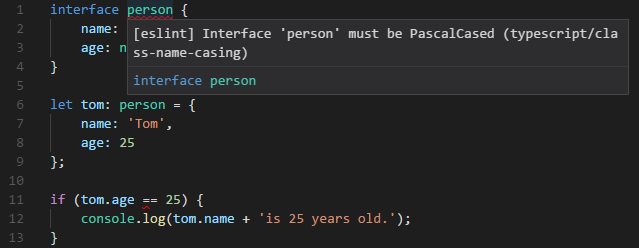
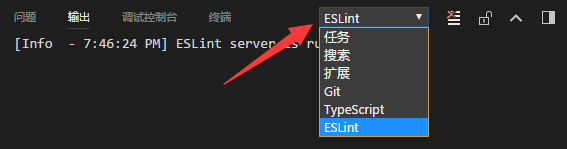

代码检查
2019 年 1 月，TypeScirpt 官方决定全面采用 ESLint 作为代码检查的工具，并创建了一个新项目 typescript-eslint，提供了 TypeScript 文件的解析器 @typescript-eslint/parser 和相关的配置选项 @typescript-eslint/eslint-plugin 等。而之前的两个 lint 解决方案都将弃用：
- typescript-eslint-parser 已停止维护
- TSLint 将提供迁移工具，并在 typescript-eslint 的功能足够完整后停止维护 TSLint（Once we consider ESLint feature-complete w.r.t. TSLint, we will deprecate TSLint and help users migrate to ESLint1）
综上所述，目前以及将来的 TypeScript 的代码检查方案就是 typescript-eslint。
什么是代码检查§
代码检查主要是用来发现代码错误、统一代码风格。
在 JavaScript 项目中，我们一般使用 ESLint 来进行代码检查，它通过插件化的特性极大的丰富了适用范围，搭配 typescript-eslint 之后，甚至可以用来检查 TypeScript 代码。
为什么需要代码检查§
有人会觉得，JavaScript 非常灵活，所以需要代码检查。而 TypeScript 已经能够在编译阶段检查出很多问题了，为什么还需要代码检查呢？
因为 TypeScript 关注的重心是类型的检查，而不是代码风格。当团队的人员越来越多时，同样的逻辑不同的人写出来可能会有很大的区别：
- 缩进应该是四个空格还是两个空格？
- 是否应该禁用
var？ - 接口名是否应该以
I开头？ - 是否应该强制使用
===而不是==？
这些问题 TypeScript 不会关注，但是却影响到多人协作开发时的效率、代码的可理解性以及可维护性。
下面来看一个具体的例子：
var myName = 'Tom';
console.log(`My name is ${myNane}`);
console.log(`My name is ${myName.toStrng()}`);
以上代码你能看出有什么错误吗？
分别用 tsc 编译和 eslint 检查后，报错信息如下：
var myName = 'Tom';
// eslint 报错信息：
// Unexpected var, use let or const instead.eslint(no-var)
console.log(`My name is ${myNane}`);
// tsc 报错信息：
// Cannot find name 'myNane'. Did you mean 'myName'?
// eslint 报错信息：
// 'myNane' is not defined.eslint(no-undef)
console.log(`My name is ${myName.toStrng()}`);
// tsc 报错信息：
// Property 'toStrng' does not exist on type 'string'. Did you mean 'toString'?
| 存在的问题 | tsc 是否报错 |
eslint 是否报错 |
|---|---|---|
应该使用 let 或 const 而不是 var |
❌ | ✅ |
myName 被误写成了 myNane |
✅ | ✅ |
toString 被误写成了 toStrng |
✅️ | ❌ |
上例中，我们使用了 var 来定义一个变量，但其实 ES6 中有更先进的语法 let 和 const，此时就可以通过 eslint 检查出来，提示我们应该使用 let 或 const 而不是 var。
对于未定义的变量 myNane，tsc 和 eslint 都可以检查出来。
由于 eslint 无法识别 myName 存在哪些方法，所以对于拼写错误的 toString 没有检查出来。
由此可见，eslint 能够发现出一些 tsc 不会关心的错误，检查出一些潜在的问题，所以代码检查还是非常重要的。
在 TypeScript 中使用 ESLint§
安装 ESLint§
ESLint 可以安装在当前项目中或全局环境下，因为代码检查是项目的重要组成部分，所以我们一般会将它安装在当前项目中。可以运行下面的脚本来安装：
npm install --save-dev eslint
由于 ESLint 默认使用 Espree 进行语法解析，无法识别 TypeScript 的一些语法，故我们需要安装 @typescript-eslint/parser，替代掉默认的解析器，别忘了同时安装 typescript：
npm install --save-dev typescript @typescript-eslint/parser
接下来需要安装对应的插件 @typescript-eslint/eslint-plugin 它作为 eslint 默认规则的补充，提供了一些额外的适用于 ts 语法的规则。
npm install --save-dev @typescript-eslint/eslint-plugin
创建配置文件§
ESLint 需要一个配置文件来决定对哪些规则进行检查，配置文件的名称一般是 .eslintrc.js 或 .eslintrc.json。
当运行 ESLint 的时候检查一个文件的时候，它会首先尝试读取该文件的目录下的配置文件，然后再一级一级往上查找，将所找到的配置合并起来，作为当前被检查文件的配置。
我们在项目的根目录下创建一个 .eslintrc.js，内容如下：
module.exports = {
parser: '@typescript-eslint/parser',
plugins: ['@typescript-eslint'],
rules: {
// 禁止使用 var
'no-var': "error",
// 优先使用 interface 而不是 type
'@typescript-eslint/consistent-type-definitions': [
"error",
"interface"
]
}
}
以上配置中，我们指定了两个规则，其中 no-var 是 ESLint 原生的规则，@typescript-eslint/consistent-type-definitions 是 @typescript-eslint/eslint-plugin 新增的规则。
规则的取值一般是一个数组（上例中的 @typescript-eslint/consistent-type-definitions），其中第一项是 off、warn 或 error 中的一个，表示关闭、警告和报错。后面的项都是该规则的其他配置。
如果没有其他配置的话，则可以将规则的取值简写为数组中的第一项（上例中的 no-var）。
关闭、警告和报错的含义如下：
- 关闭：禁用此规则
- 警告：代码检查时输出错误信息，但是不会影响到 exit code
- 报错：发现错误时，不仅会输出错误信息，而且 exit code 将被设为 1（一般 exit code 不为 0 则表示执行出现错误）
检查一个 ts 文件§
创建了配置文件之后，我们来创建一个 ts 文件看看是否能用 ESLint 去检查它。
创建一个新文件 index.ts，将以下内容复制进去：
var myName = 'Tom';
type Foo = {};
然后执行以下命令：
./node_modules/.bin/eslint index.ts
则会得到如下报错信息：
/path/to/index.ts
1:1 error Unexpected var, use let or const instead no-var
3:6 error Use an `interface` instead of a `type` @typescript-eslint/consistent-type-definitions
✖ 2 problems (2 errors, 0 warnings)
2 errors and 0 warnings potentially fixable with the `--fix` option.
上面的结果显示，刚刚配置的两个规则都生效了：禁止使用 var；优先使用 interface 而不是 type。
需要注意的是，我们使用的是 ./node_modules/.bin/eslint，而不是全局的 eslint 脚本，这是因为代码检查是项目的重要组成部分，所以我们一般会将它安装在当前项目中。
可是每次执行这么长一段脚本颇有不便，我们可以通过在 package.json 中添加一个 script 来创建一个 npm script 来简化这个步骤：
{
"scripts": {
"eslint": "eslint index.ts"
}
}
这时只需执行 npm run eslint 即可。
检查整个项目的 ts 文件§
我们的项目源文件一般是放在 src 目录下，所以需要将 package.json 中的 eslint 脚本改为对一个目录进行检查。由于 eslint 默认不会检查 .ts 后缀的文件，所以需要加上参数 --ext .ts：
{
"scripts": {
"eslint": "eslint src --ext .ts"
}
}
此时执行 npm run eslint 即会检查 src 目录下的所有 .ts 后缀的文件。
在 VSCode 中集成 ESLint 检查§
在编辑器中集成 ESLint 检查，可以在开发过程中就发现错误，甚至可以在保存时自动修复错误，极大的增加了开发效率。
要在 VSCode 中集成 ESLint 检查，我们需要先安装 ESLint 插件，点击「扩展」按钮，搜索 ESLint，然后安装即可。
VSCode 中的 ESLint 插件默认是不会检查 .ts 后缀的，需要在「文件 => 首选项 => 设置 => 工作区」中（也可以在项目根目录下创建一个配置文件 .vscode/settings.json），添加以下配置：
{
"eslint.validate": [
"javascript",
"javascriptreact",
"typescript"
],
"typescript.tsdk": "node_modules/typescript/lib"
}
这时再打开一个 .ts 文件，将鼠标移到红色提示处，即可看到这样的报错信息了：

我们还可以开启保存时自动修复的功能，通过配置：
{
"eslint.autoFixOnSave": true,
"eslint.validate": [
"javascript",
"javascriptreact",
{
"language": "typescript",
"autoFix": true
},
],
"typescript.tsdk": "node_modules/typescript/lib"
}
就可以在保存文件后，自动修复为：
let myName = 'Tom';
interface Foo {}
使用 Prettier 修复格式错误§
ESLint 包含了一些代码格式的检查，比如空格、分号等。但前端社区中有一个更先进的工具可以用来格式化代码，那就是 Prettier。
Prettier 聚焦于代码的格式化，通过语法分析，重新整理代码的格式，让所有人的代码都保持同样的风格。
首先需要安装 Prettier：
npm install --save-dev prettier
然后创建一个 prettier.config.js 文件，里面包含 Prettier 的配置项。Prettier 的配置项很少，这里我推荐大家一个配置规则，作为参考：
// prettier.config.js or .prettierrc.js
module.exports = {
// 一行最多 100 字符
printWidth: 100,
// 使用 4 个空格缩进
tabWidth: 4,
// 不使用缩进符，而使用空格
useTabs: false,
// 行尾需要有分号
semi: true,
// 使用单引号
singleQuote: true,
// 对象的 key 仅在必要时用引号
quoteProps: 'as-needed',
// jsx 不使用单引号，而使用双引号
jsxSingleQuote: false,
// 末尾不需要逗号
trailingComma: 'none',
// 大括号内的首尾需要空格
bracketSpacing: true,
// jsx 标签的反尖括号需要换行
jsxBracketSameLine: false,
// 箭头函数，只有一个参数的时候，也需要括号
arrowParens: 'always',
// 每个文件格式化的范围是文件的全部内容
rangeStart: 0,
rangeEnd: Infinity,
// 不需要写文件开头的 @prettier
requirePragma: false,
// 不需要自动在文件开头插入 @prettier
insertPragma: false,
// 使用默认的折行标准
proseWrap: 'preserve',
// 根据显示样式决定 html 要不要折行
htmlWhitespaceSensitivity: 'css',
// 换行符使用 lf
endOfLine: 'lf'
};
接下来安装 VSCode 中的 Prettier 插件，然后修改 .vscode/settings.json：
{
"files.eol": "\n",
"editor.tabSize": 4,
"editor.formatOnSave": true,
"editor.defaultFormatter": "esbenp.prettier-vscode",
"eslint.autoFixOnSave": true,
"eslint.validate": [
"javascript",
"javascriptreact",
{
"language": "typescript",
"autoFix": true
}
],
"typescript.tsdk": "node_modules/typescript/lib"
}
这样就实现了保存文件时自动格式化并且自动修复 ESLint 错误。
需要注意的是，由于 ESLint 也可以检查一些代码格式的问题，所以在和 Prettier 配合使用时，我们一般会把 ESLint 中的代码格式相关的规则禁用掉，否则就会有冲突了。
使用 AlloyTeam 的 ESLint 配置§
ESLint 原生的规则和 @typescript-eslint/eslint-plugin 的规则太多了，而且原生的规则有一些在 TypeScript 中支持的不好，需要禁用掉。
这里我推荐使用 AlloyTeam ESLint 规则中的 TypeScript 版本，它已经为我们提供了一套完善的配置规则，并且与 Prettier 是完全兼容的（eslint-config-alloy 不包含任何代码格式的规则，代码格式的问题交给更专业的 Prettier 去处理）。
安装：
npm install --save-dev eslint typescript @typescript-eslint/parser @typescript-eslint/eslint-plugin eslint-config-alloy
在你的项目根目录下创建 .eslintrc.js，并将以下内容复制到文件中即可：
module.exports = {
extends: [
'alloy',
'alloy/typescript',
],
env: {
// 您的环境变量（包含多个预定义的全局变量）
// Your environments (which contains several predefined global variables)
//
// browser: true,
// node: true,
// mocha: true,
// jest: true,
// jquery: true
},
globals: {
// 您的全局变量（设置为 false 表示它不允许被重新赋值）
// Your global variables (setting to false means it's not allowed to be reassigned)
//
// myGlobal: false
},
rules: {
// 自定义您的规则
// Customize your rules
}
};
更多的使用方法，请参考 AlloyTeam ESLint 规则
使用 ESLint 检查 tsx 文件§
如果需要同时支持对 tsx 文件的检查，则需要对以上步骤做一些调整：
安装 eslint-plugin-react§
npm install --save-dev eslint-plugin-react
package.json 中的 scripts.eslint 添加 .tsx 后缀§
{
"scripts": {
"eslint": "eslint src --ext .ts,.tsx"
}
}
VSCode 的配置中新增 typescriptreact 检查§
{
"files.eol": "\\n",
"editor.tabSize": 4,
"editor.formatOnSave": true,
"editor.defaultFormatter": "esbenp.prettier-vscode",
"eslint.autoFixOnSave": true,
"eslint.validate": [
"javascript",
"javascriptreact",
{
"language": "typescript",
"autoFix": true
},
{
"language": "typescriptreact",
"autoFix": true
}
],
"typescript.tsdk": "node_modules/typescript/lib"
}
使用 AlloyTeam ESLint 规则中的 TypeScript React 版本§
AlloyTeam ESLint 规则中的 TypeScript React 版本
Troubleshootings§
Cannot find module '@typescript-eslint/parser'§
你运行的是全局的 eslint，需要改为运行 ./node_modules/.bin/eslint。
VSCode 没有显示出 ESLint 的报错§
- 检查「文件 => 首选项 => 设置」中有没有配置正确
- 检查必要的 npm 包有没有安装
- 检查
.eslintrc.js有没有配置 - 检查文件是不是在
.eslintignore中
如果以上步骤都不奏效，则可以在「文件 => 首选项 => 设置」中配置 "eslint.trace.server": "messages"，按 Ctrl+Shift+U 打开输出面板，然后选择 ESLint 输出，查看具体错误。

为什么有些定义了的变量（比如使用 enum 定义的变量）未使用，ESLint 却没有报错？§
因为无法支持这种变量定义的检查。建议在 tsconfig.json 中添加以下配置，使 tsc 编译过程能够检查出定义了未使用的变量：
{
"compilerOptions": {
"noUnusedLocals": true,
"noUnusedParameters": true
}
}
启用了 noUnusedParameters 之后，只使用了第二个参数，但是又必须传入第一个参数，这就会报错了§
第一个参数以下划线开头即可，参考 https://github.com/Microsoft/TypeScript/issues/9458